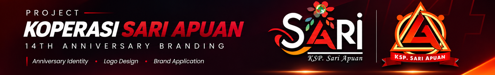
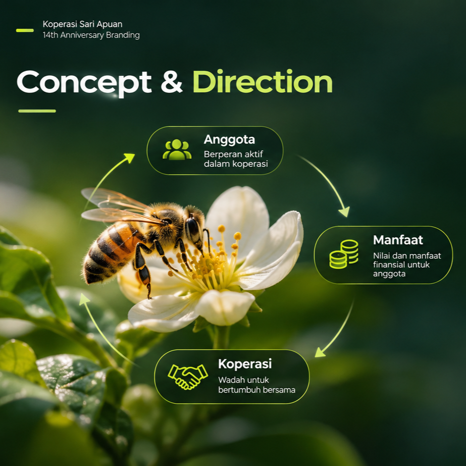
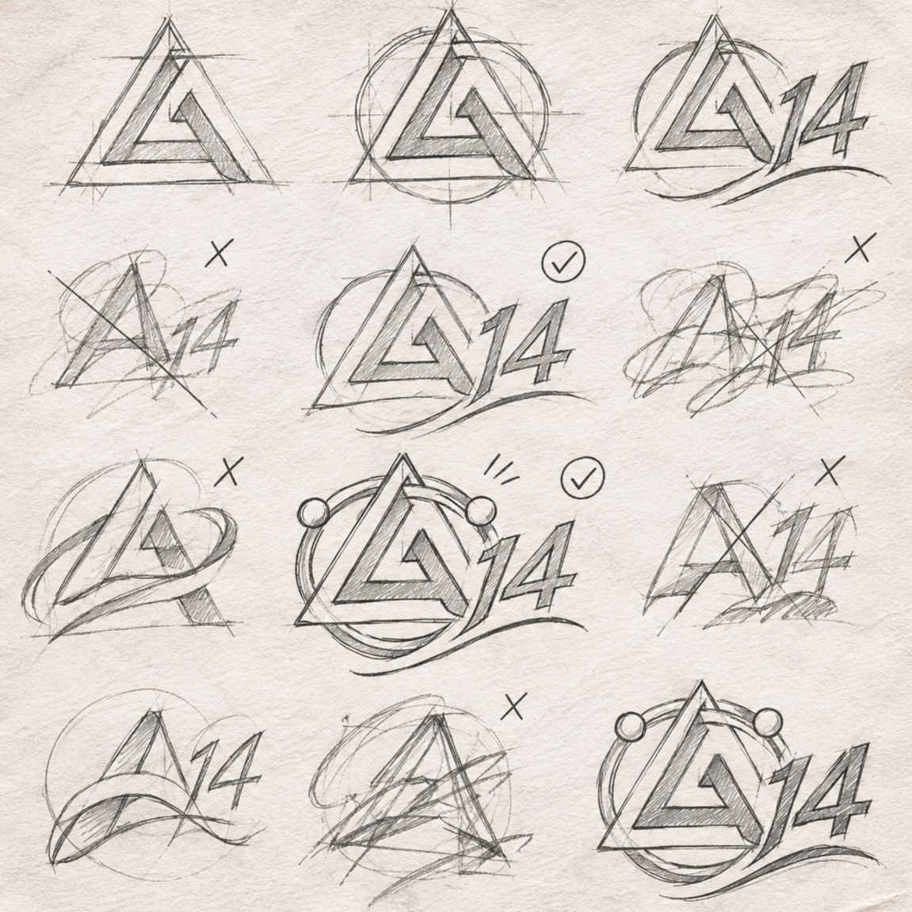
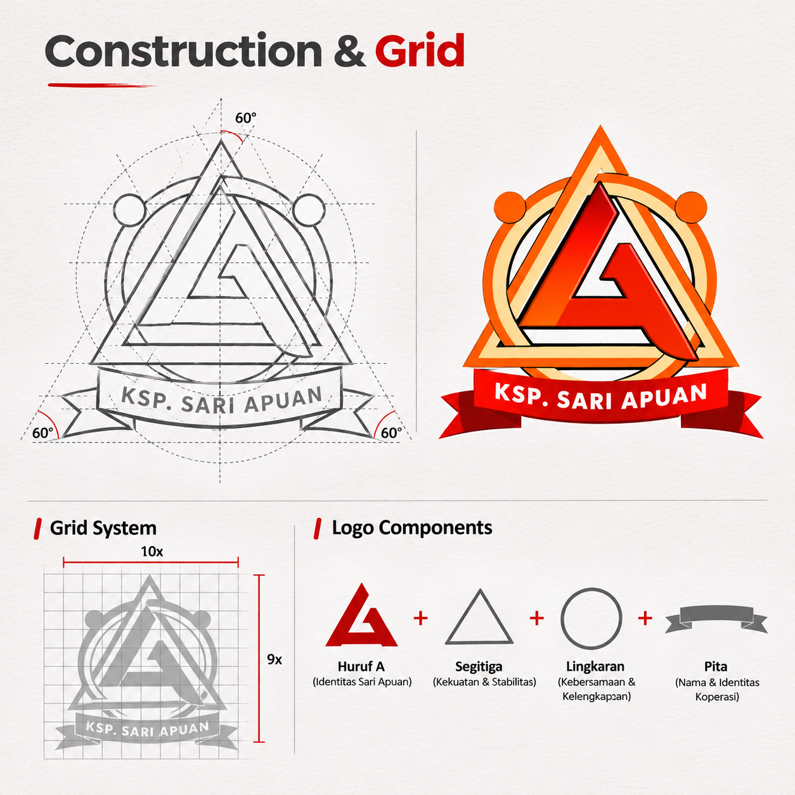
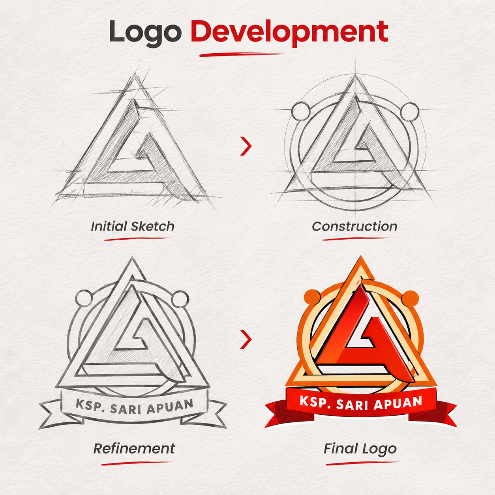
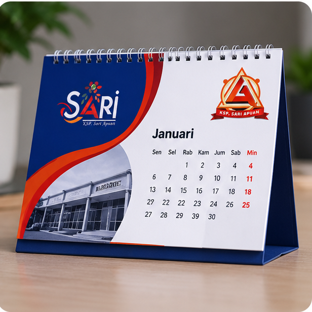
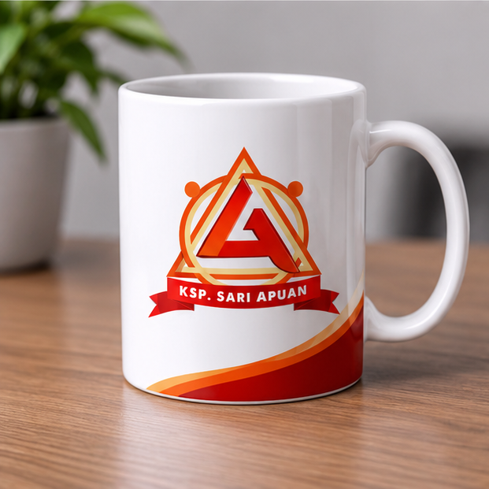
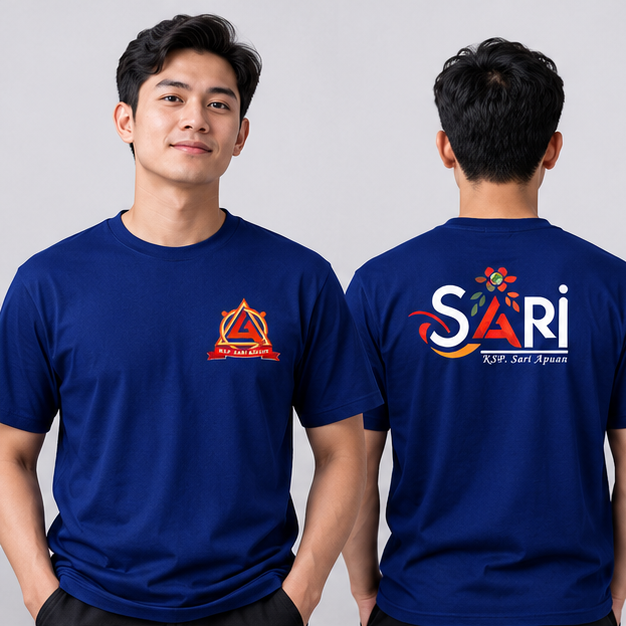
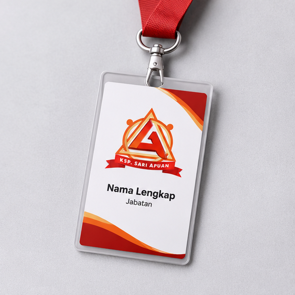
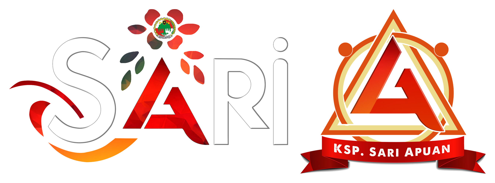

Koperasi Sari Apuan — 14th Anniversary
A special anniversary identity created for Koperasi Sari Apuan’s 14th anniversary, celebrating the cooperative’s growth and the mutual relationship between the cooperative and its members.

Project Overview
This project is a special visual identity created for the 14th anniversary of Koperasi Sari Apuan. It is an anniversary design, not a complete rebranding of the cooperative.
The design celebrates the cooperative’s journey and highlights the mutualistic relationship between the cooperative and its members through the symbolism of a bee, flower nectar, and the number 14.
Concept & Direction

Visual Direction
The main concept represents a mutually beneficial relationship between Koperasi Sari Apuan and its members. Like bees and flowers, both sides contribute and grow together.
Design Approach
The number 14 marks the anniversary milestone. The bee represents active members, while flower nectar symbolizes financial benefits and the value members receive. The “A” symbol and circular ornament come from the original Sari Apuan logo and were slightly refined for this anniversary design.
Logo Development

Initial Sketch
Construction & Grid
Logo DevelopmentColor Palette
The anniversary identity uses a bold combination of orange, warm cream, and layered red tones to represent energy, unity, and a strong sense of identity.
Typography
Two fonts are used in this anniversary design. A Love of Thunder is used for the front design, while Monotype Corsiva is used for the back logo.
A Love of Thunder
Used for the main logo. The numbers 1 and 4 were customized and combined to create the anniversary emblem.
A Love of Thunder
Its bold and distinctive style gives the anniversary design a strong visual identity.
Monotype Corsiva
Used for the lettering on the back logo, giving it a simple, elegant, and classic look.
Brand Application
The anniversary design is applied to a shirt, with a dedicated graphic on the front and another composition on the back.




Final Result
The final anniversary identity for Koperasi Sari Apuan, featuring the original logo and the 14th anniversary emblem.
